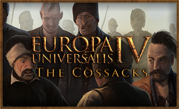
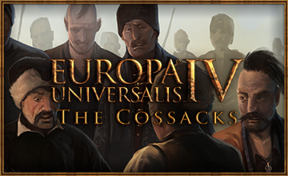

Europa Universalis IV is a grand strategy game spanning over 370 years of human history.
From the end of the Crusade of Varna...
Europa Universalis IV is a grand strategy game spanning over 370 years of human history.
...to the death of Napoleon Bonaparte.
The surrender of Maine was one of the key events that marked the end of the Hundred Years' War.
Select one of the Hundred Years' War countries to learn about their starting situation.
Click anywhere to close.
Age of Exploration
Christopher Columbus traveled from Canary Islands, Spain to San Salvador in the Bahamas.
Click on his ship to start the voyage.
The French invasion of Russia, known in Russia as the Patriotic War of 1812 (Russian: Отечественная война 1812 года Otechestvennaya Voyna 1812 Goda) and in France as the Russian Campaign (French: Campagne de Russie), began on 24 June 1812 when Napoleon's Grande Armée crossed the Neman River in an attempt to engage and defeat the Russian army.
Napoleon hoped to compel Tsar Alexander I of Russia to cease trading with British merchants through proxies in an effort to pressure the United Kingdom to sue for peace. The official political aim of the campaign was to liberate Poland from the threat of Russia. Napoleon named the campaign the Second Polish War to gain favor with the Poles and provide a political pretext for his actions.
England
In exchange for accepting the treaty of Tours in 1444 the county of Maine was promised to France. In practice however this has still not come to pass. No English governor wants to be remembered as the one to surrender Maine and in London prominent nobles are claiming that our negotiator, William de la Pole, had no mandate to make this concession in the first place.
French emissaries have repeatedly tried to remind us of this ever since the signing and Henry VI has now finally taken matters in his own hands and shown up at the walls of Le Mans, demanding the city to surrender.
Unless we surrender Maine to the French we are very likely looking at a hasty resumption of hostilities.
France
In exchange for accepting the treaty of Tours in 1444 the county of Maine was promised to France. In practice however this has still not come to pass. The English have repeatedly evaded the question and it is becoming increasingly clear that many in the English camp are arguing that the treaty will not be honored.
In one last attempt to force the question Henry VI has approached the county capital, Le Mans, himself and demanded the surrender of the city.
The local commander however shows no signs of intending to open the gates, despite not having a force strong enough to withstand an attack.
For nearly five months, Columbus explored the Caribbean, particularly the islands of Juana (Cuba) and Hispaniola (Santo Domingo), before returning to Spain. He left thirty-nine men to build a settlement called La Navidad in present-day Haiti.
He also kidnapped several Native Americans (between ten and twenty-five) to take back to Spain—only eight survived. Columbus brought back small amounts of gold as well as native birds and plants to show the richness of the continent he believed to be Asia.
 
